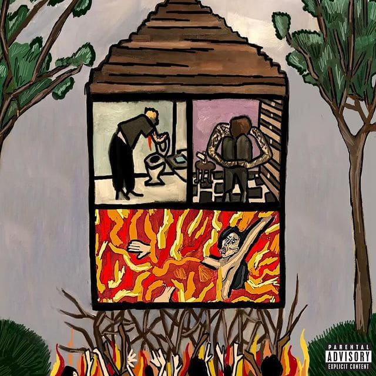
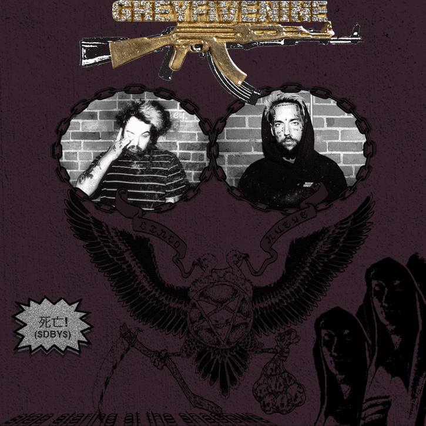
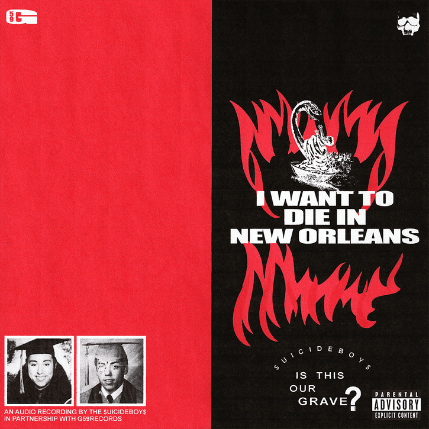
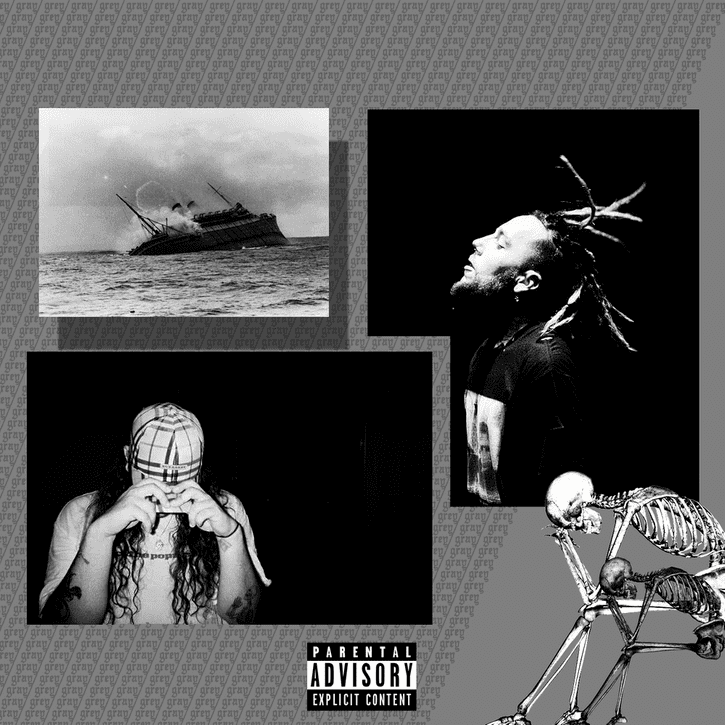
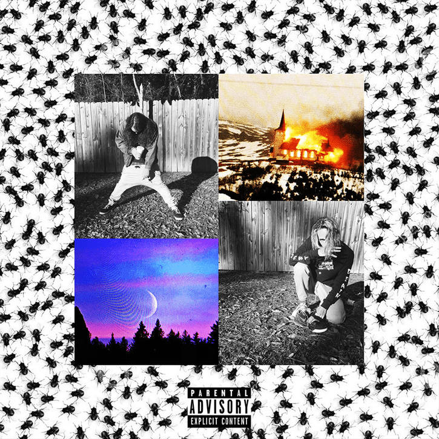
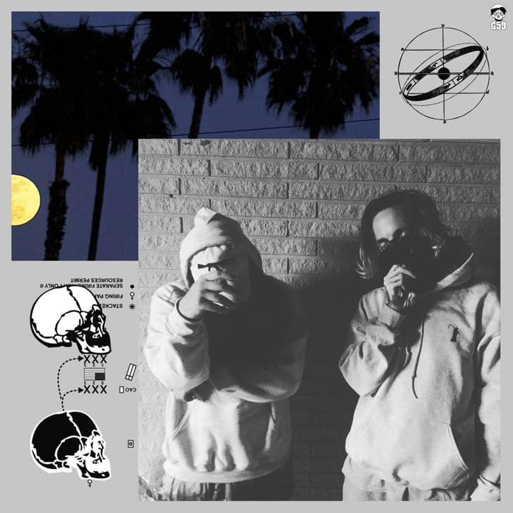
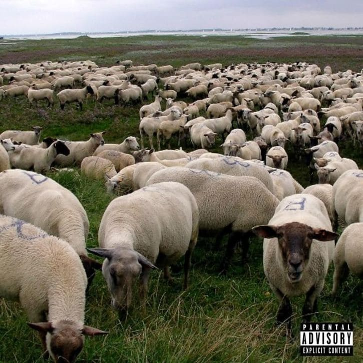
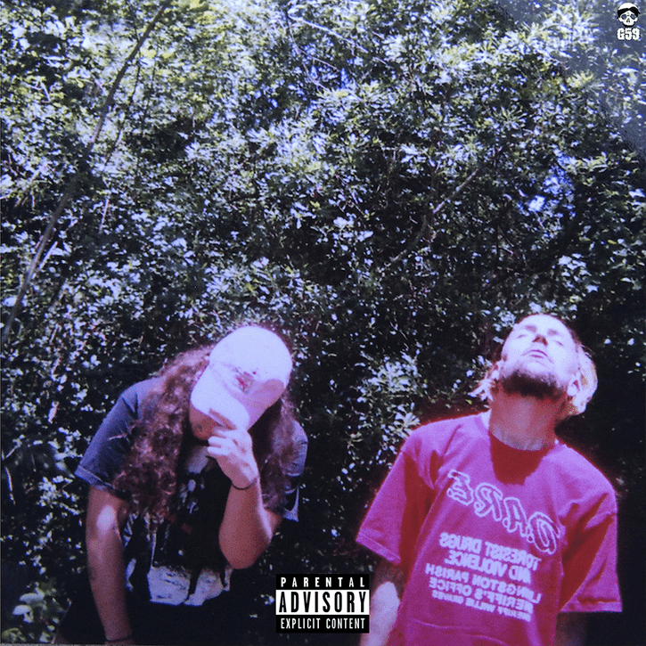
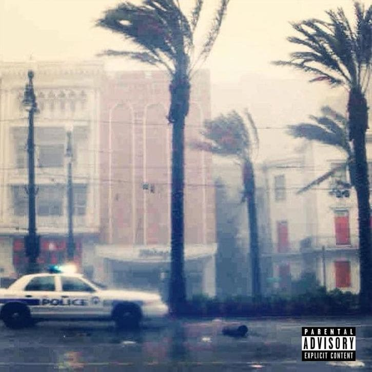
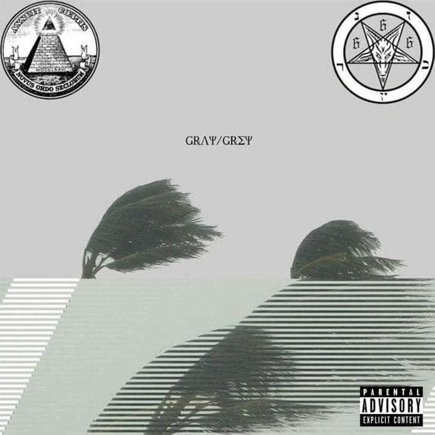

Home
Discografia
Tour
Galeria
Contacto
Albums
Long Term Effects of SUFFERING (Proximo album) 
Stop Staring At The Shadows - 2020
I Want to Die in New Orleans - 2018
Eternal Grey - 2016
Grey Sheep II - 2016
Dark Side of the Clouds - 2016
Now the Moon's Rising - 2016
My Liver Will Handle What My Heart Can't - 2015
Grey Sheep - 2015
High Tide in the Snake's Nest - 2015
YUNGDEATHLILLIFE - 2015
7th or St. Tammany - 2015
Gray/Grey - 2015